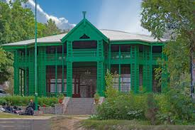
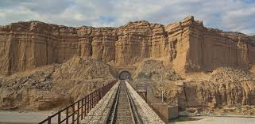
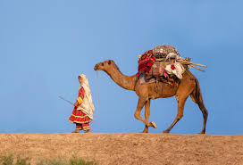
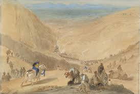

Balochistan, the largest province of Pakistan by area, is known for its vast landscapes and diverse ethnic composition, primarily featuring the Baloch and Pashtun communities. The region is rich in natural resources, including minerals, gas, and precious stones, which hold significant economic potential. Balochistan's capital, Quetta, serves as a cultural and economic hub, while cities like Gwadar are emerging as key ports in the China-Pakistan Economic Corridor (CPEC), aimed at boosting trade and infrastructure. The province's geographical diversity ranges from mountainous terrains to arid deserts and coastal areas, providing a unique backdrop for its vibrant culture. Culturally, Balochistan is renowned for its rich traditions, music, and handicrafts. The Balochi language, along with several regional dialects, is an integral part of the local identity. Traditional music, characterized by instruments like the rabab and dhol, plays a crucial role in social gatherings and celebrations. Festivals such as Jashn-e-Laylat-ul-Mi'raj highlight the province's cultural vibrancy. Despite facing challenges such as underdevelopment and political unrest, the people of Balochistan remain resilient, with a strong sense of community and pride in their heritage. The province holds significant potential for development, especially through initiatives aimed at enhancing education, healthcare, and infrastructure, paving the way for a brighter future.
Balochistan's landscape is dotted with stunning natural wonders, such as the breathtaking Hingol National Park and the majestic landscapes of the Makran coast, which attract both local and international tourists. The region is also home to unique geological formations, such as the famous Siachen Glacier and the mesmerizing mud volcanoes near Hingol. These natural attractions, coupled with the province's rich archaeological sites, including ancient ruins and cave paintings, offer a glimpse into its long and varied history. The province’s economy is also bolstered by agriculture and livestock, with many communities relying on farming and pastoralism for their livelihoods. Traditional crafts, including weaving and pottery, are highly valued, reflecting the skills and artistry of Baloch artisans. Additionally, the people of Balochistan are known for their hospitality and warmth, making visitors feel welcome. As Balochistan continues to develop, there is a growing emphasis on sustainable practices that honor its rich heritage while fostering economic growth, ensuring a balance between tradition and modernity for future generations.
|  |  |  |  |
|---|